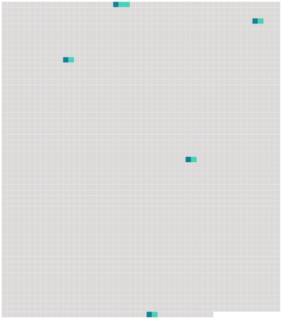

Longueur nb maillons : 5 mentions |
|
Un prie-Dieu était disposé à côté du lit ; une flamme bleuâtre voltigeant sur une patère de bronze jetait par [toute la chambre] un jour faible et douteux, et çà et là faisait papilloter dans l’ ombre quelque arête saillante de meuble ou de corniche. [3 phrases] [Cette chambre] n’ avait rien d’ une chambre de mort. [9 phrases] Je ne pouvais plus y tenir ; cet air d’ alcôve m’ enivrait, cette fébrile senteur de rose à demi fanée me montait au cerveau, et je marchais à grands pas dans [la chambre] , m’ arrêtant à chaque tour devant l’ estrade pour considérer la gracieuse trépassée sous la transparence de son linceul. [32 phrases] Un tourbillon de vent furieux défonça la fenêtre et entra dans [la chambre] ; la dernière feuille de la rose blanche palpita quelque temps comme une aile au bout de la tige, puis elle se détacha et s’ envola par la croisée ouverte, emportant avec elle l’ âme de Clarimonde. [43 phrases]
Les petites fleurs bleues que j’ avais remarquées dans ses cheveux étaient tout à fait sèches et avaient presque perdu toutes leurs feuilles ; ce qui ne l’ empêchait pas d’ être charmante, si charmante que, malgré la singularité de l’ aventure et la façon inexplicable dont elle était entrée dans [la chambre] , je n’ eus pas un instant de frayeur. |
 |
Il est possible de télécharger la ressource sur la page Ortolang |
Si vous avez des questions ou vous voyez des erreurs, merci d'envoyer un mail à silvia.federzoni89@gmail.com |